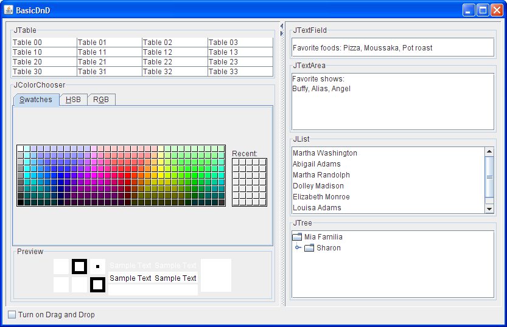

Most programs can benefit from the ability to transfer information, either between components, between Java applications, or between Java and native applications. The ability to transfer data takes two forms:
- Drag and drop (DnD) support. The following diagram illustrates the Java portion of a drag operation:
[PENDING: Change "Drag begins" in the diagram to "Drag gesture".]
- Clipboard transfer via cut/copy and paste. The following diagrams illustrate the Java portion of the cut/copy and paste operations:
The arrows in the preceding diagrams show the path of the data.
In a nutshell, a data transfer begins by bundling the data into a package, called a
Transferable. Then the component provides an object, called aTransferHandlerthat extracts the data from theTransferable.Many Swing components provide out-of-the-box support for transferring data, as shown in the following table:
*Enabled by invoking
Data Transfer Support Component Drag*
CopyDrag*
MoveDrop Cut Copy Paste JColorChooser**JEditorPaneJFileChooser***JFormattedTextFieldJListJPasswordFieldn/a n/a n/a n/a JTableJTextAreaJTextFieldJTextPaneJTreecomponent.setDragEnabled(true)on the component.
**Imports and exports data of typejava.awt.Color.
***Exports both a list of filenames asjava.io.Fileobjects (preferred) and as strings for those components that do not acceptFileobjects. The File Name text field in the file chooser accepts strings; the browser in the file chooser does not accept data. Note that as of release 1.4, clipboard copy from aJFileChooseris broken and actually causes the file to be moved when it is pasted. You may want to watch bug #4915992.The data transfer mechanism is built in to every
JComponent. For all the components with an empty space in the preceding table only a small amount of code is needed to customize the support. Support can easily be added toJComponents not listed in the table so they can fully participate in data transfer.The rest of this section covers the following topics:
- A Visual Guide to Drag and Drop Cursor Icons
- Introduction to Data Transfer Support
- A Simple Example: Adding DnD to JLabel
- Extending Default DnD Support
- Specifying the Data Format
- Importing a New Flavor: Color
- Replacing Default Support: Color and Text
- Importing a New Flavor: Files
- Data Transfer with a Custom Component
- Data Transfer with a Custom DataFlavor
- Adding Cut/Copy/Paste Support
- The Data Transfer API
- Examples that Use Data Transfer
A Visual Guide to Drag and Drop Cursor Icons
Before delving into drag and drop further, it's useful to take a look at the various cursor icons you may encounter when initiating a drag operation. We expect the Solaris and Linux cursor icons to change for release 1.5, but here is a guide as of release 1.4:
Cursor Icons for Drag and Drop
Microsoft
WindowsSolaris/
LinuxDescription Copy. The component underneath accepts this type of data. Copy. The area underneath will not accept this data. Move. The component underneath accepts this type of data. Move. The area underneath will not accept this data. On a
Componentsupporting both Copy and Move, a normal drag from the component performs a move and a Control-drag performs a copy. The drag behavior from a native application to a Java application is platform dependent. If only one of the operations is supported, a normal drag performs that operation. For more information on the behavior of the drop action, see the class spec for DragSourceDragEvent.
Introduction to Data Transfer Support
The simple demo
BasicDnDillustrates default drag and drop behavior for several Swing components. At startup the components do not have drag turned on, but a check box allows you to enable dragging on the fly. Note that at startup, even though drag is not yet enabled, many of the components do support the cut/copy/paste of text using key bindings.
This figure has been reduced to fit on the page.
Click the image to view it at its natural size.
Try this:
- Run BasicDnD using JavaTM Web Start. Or, to compile and run the example yourself, consult the example index.
- Select an item in the list, and then release the mouse button so it is now highlighted.
- Press the item again, this time holding down the mouse button and begin to drag. Nothing happens because
has not yet been called on the list. setDragEnabled(true)- Type Control-C. This puts the text of the selected list item onto the system clipboard.
- Click in the text area. The caret cursor blinks showing that this component now has the focus.
- Type Control-V. The contents of the previously copied text are pasted at the caret location.
- Click the "Turn on Drag and Drop" check box.
- Once again, press the selected item in the list and begin to drag. Initially, on Microsoft Windows, you see the cursor icon. This indicates that the area below the cursor, in this case the list itself, does not accept drops.
- Drag the cursor over a text area. The cursor icon now changes to . This text area will accept the data if you release the mouse button.
- As you can see in the cursor icon table, the Copy cursor icon gives you a visual clue that it will not disturb the contents of the original component. In the case of Microsoft Windows, the clue is the small + sign.
- Drag the selected text over a text area. The insertion point for the text is indicated by a blinking cursor.
- Release the mouse and watch the text appear in the text area.
- Select some text in one of the text areas.
- Press and hold the mouse button while the cursor is over the selected text and begin to drag.
- Note that this time, the icon appears. This indicates that the drag is a Move and will remove the text from the original component on a successful drop.
- Release the mouse button over an area that will not accept it. The original text is undisturbed.
- Hold the Control key down and press again on the selected text. The Copy icon now appears. Move the cursor over the text area and drop. The text appears in the new location but is not removed from the original location. The Control key can be used to change any Move to a Copy.
- Select a color from the color chooser. The selected color appears in the Preview panel. Press and hold the mouse button over the color in the Preview panel and drag it over the other components. Note that none of the components accepts color by default.
- Play with dragging and dropping between the various components and note which components accept data.
When the Turn drag and drop on check box is checked,
BasicDnDdemonstrates drag and drop behavior that becomes available to a component with the following line of code:Many components support cut/copy/paste of text using the keyboard bindings Control-X, Control-C, and Control-V, respectively. This is because acomponent.setDragEnabled(true);JTextComponentinstalls the cut/copy/paste key bindings and action map when it is created. You only need to add a bit more code to create a menu with Cut, Copy and Paste menu items and tie those items to the default text support. We show you how to do that in theDragColorTextFieldDemoexample. Cut/copy/paste is further discussed in Adding Cut/Copy/Paste Support.At the heart of the data transfer mechanism is the
TransferHandlerclass. ATransferHandlerprovides an easy mechanism for transferring data to and from aJComponent. The data to be transferred is bundled up into an object that implements theTransferableinterface. The components in the data transfer support table are provided with default transfer handlers, but a transfer handler can be created and installed on any component using theJComponentmethodsetTransferHandler:The default Swing transfer handlers, such as those used by text components and the color chooser, provide the support considered to be most useful for both importing and exporting of data. If you install a customcomponent.setTransferHandler(new MyTransferHandler());TransferHandleronto a Swing component, the default support is replaced. For example, if you replaceJTextField'sTransferHandlerwith one that handles colors only, you'll disable its ability to support import and export of text.This means that if you must replace a default
TransferHandler— for example, one that handles text — you'll need to re-implement the text import and export ability. This does not need to be as extensive as what Swing provides — it could be as simple as supporting theStringFlavordata flavor, depending on your application's needs. TheDragColorTextFieldDemogives an example of this. You might also want to watch RFE #4830695, which requests the ability to add data import on top of an existingTransferHandler.The remainder of this document describes how to use data transfer in a variety of ways. Here is a list of some common scenarios and where in the document you can find more information:
- How do I provide drop support for those components in the Data Transfer Support table that do not have a check-mark in the drop column?
- You need to implement a custom transfer handler to provide drop support. See Extending Default DnD Support for an example of how this is done.
- I want my component to import only. How do I do that?
- You need to provide a custom transfer handler with implementations for the
canImportandimportDatamethods. TheDragColorDemoexample in Importing a New Flavor: Color does this.
- How do I create a component that can accept multiple types of data?
- A transfer handler can be created to accept more than one type of data. Replacing Default Support: Color and Text shows the example, DragColorTextFieldDemo, which installs a custom transfer handler on a
JTextFieldto import both color and text, and export text. Also, theDragFileDemoin Importing a New Flavor: Files installs a transfer handler on the text area/tabbed pane that imports both files and strings.
- How do I create a custom transfer handler to import/export a non-standard type of data?
- Specifying the Data Format describes how to create a data flavor with a variety of data types. Also, the DragListDemo example in Data Transfer with a Custom DataFlavor shows how to transfer data in the
ArrayListformat.
- How do I make data transfer work with my custom component?
- Data Transfer with a Custom Component discusses the requirements of making a custom component work with the data transfer system.
- How do I enable the cut/copy/paste bindings?
- Adding Cut/Copy/Paste Support describes how to enable the built-in cut/copy/paste support for text components. Implementing cut/copy/paste for non-text components is also covered.
- How do I obtain the drop position in the destination component?
- You can obtain the drop location by way of the component's selection. You'll notice that the selection changes in a component as you drag over it. For lists, tables, and trees you can query the current selection at drop time to find the drop position. For text components, you can query the position of the caret. There is an example of this in ArrayListTransferHandler, part of the DragListDemo example. You might also want to watch RFE #4468566, which requests a better way of indicating (and displaying) the drop location without changing the selection.
This has been a brief introduction to the Swing data transfer mechanism. If you want more details, see the Swing Data Transfer document in the release notes for your particular J2SE release.
A Simple Example: Adding DnD to JLabel
The
JLabelcomponent does not, by default, support drag or drop, but it is a fairly simple exercise to add this support — the following demo shows how to do this.
Try this:
- Run LabelDnD using Java Web Start. Or, to compile and run the example yourself, consult the example index.
- Press and hold the mouse button while the cursor is over the label. As you begin to move the cursor the Copy cursor icon appears. Drop the text onto the text field.
- Type text into the text field. Select and initiate the drag using the mouse. The Move cursor icon appears because the default behavior for text field is Move. Drop the text onto the label and note that the selected string has been removed from the original text.
- Type more text into the text field, if necessary, and select. While holding down the Control key, drag the text. The Copy cursor icon appears. Drop the text as desired.
While it is possible to extend this example to show copy and paste, note that
JLabeldoes not have bindings for copy and paste and does not, by default, receive the focus that is required to support this feature.The entire example can be found in
LabelDnD.java. Here is the code that creates the label and installs a transfer handler on the label:label = new JLabel("I'm a Label!", SwingConstants.LEADING); label.setTransferHandler(new TransferHandler("text")); MouseListener listener = new DragMouseAdapter(); label.addMouseListener(listener);To add drag support to
JLabelor any custom component, you must add the ability to detect activity on the mouse.LabelDnDimplements a mouse listener to detect mouse pressed — when the mouse is pressed, the transfer handler initiates the drag from the label by invokingexportAsDragwith the Copy argument:public class DragMouseAdapter extends MouseAdapter { public void mousePressed(MouseEvent e) { JComponent c = (JComponent)e.getSource(); TransferHandler handler = c.getTransferHandler(); handler.exportAsDrag(c, e, TransferHandler.COPY); } }To find what the call to
does, see Specifying the Data Format.new TransferHandler("text")
Extending Default DnD Support
You've seen in the Data Transfer Support table that several components do not support drop by default. The reason for this is that there is no all-purpose way to handle a drop on those components. For example, what does it mean to drop on a particular node of a
JTree? Does it replace the node, insert below it, or insert as a child of that node? Also, we don't know what type of model is behind the tree — it might not be mutable. However, while Swing doesn't provide a default implementation, the framework for drop is there. You need only to provide a customTransferHandlerthat deals with the actual transfer of data.The following example,
ExtendedDnDDemo, tweaks the default drag and drop behavior for two components,JListandJTable. This demo shows how to:
- Drop text onto a
JList— the incoming string can be newline-delimited so that a new list item is created at each new line.- Move data from a
JList(the default Swing behavior is Copy). On export, multiple list items are separated by newlines.- Drop text onto a
JTable— the incoming string can be newline and comma-delimited. Strings are split into rows at newlines, and into columns at commas.- Move data from a
JTable(the default Swing behavior is Copy). On export, multiple table rows are separated by newlines, and table columns are separated by commas.If you've run the
BasicDnDexample previously, you'll see that this tweaked behavior is slightly different than the default Swing behavior which does not use commas as a separator.
Try this:
- Run ExtendedDnDDemo using Java Web Start. Or, to compile and run the example yourself, consult the example index.
- Select a row in the table
- Press the row again and drag. As you drag the cursor icon over the list, the row that is currently under the cursor highlights — the new data will be inserted after the selected row.
- Drop the row onto the list. Note that the row has been removed from the table, and now appears in the list with commas separating the columns.
- Select two rows from the table and drop onto the list. Now there are two new items in the list with commas separating the columns.
- Select one of the items in the list and drag it to the table. As you drag the icon over the table, the row that is under the curson highlights — the new data will be inserted after the selected row.
- Drop it onto the table. It is removed from the list and the commas are removed, replaced by column separators.
- Type some text into the text area; for example: How, Now, Brown, Cow. Select the line of text and drop it into the table.
- Select an item in the list. Hold down the Control key while dragging the item to the text area and drop. The text has been copied to the new location.
The code for the example's main class is in
ExtendedDnDDemo.java. An abstract subclass ofTransferHandler,StringTransferHandler, defines three abstract methods for importing and exporting strings:exportString,importString, andcleanup.StringTransferHandleralso overrides the standardTransferHandlermethods:importDataandcanImportare required to import data;getSourceActions,createTransferable, andexportDoneare for export. (Note thatexportDonemay not be necessary if you only implement Copy and, therefore, do not need to remove data from the source as you would for a Move.) The abstract methodsimportString,exportString, andcleanupare called by theimportData,createTransferable, andexportDonemethods, respectively. Here is the code forStringTransferHander.java:public abstract class StringTransferHandler extends TransferHandler { protected abstract String exportString(JComponent c); protected abstract void importString(JComponent c, String str); protected abstract void cleanup(JComponent c, boolean remove); protected Transferable createTransferable(JComponent c) { return new StringSelection(exportString(c)); } public int getSourceActions(JComponent c) { return COPY_OR_MOVE; } public boolean importData(JComponent c, Transferable t) { if (canImport(c, t.getTransferDataFlavors())) { try { String str = (String)t.getTransferData(DataFlavor.stringFlavor); importString(c, str); return true; } catch (UnsupportedFlavorException ufe) { } catch (IOException ioe) { } } return false; } protected void exportDone(JComponent c, Transferable data, int action) { cleanup(c, action == MOVE); } public boolean canImport(JComponent c, DataFlavor[] flavors) { for (int i = 0; i < flavors.length; i++) { if (DataFlavor.stringFlavor.equals(flavors[i])) { return true; } } return false; } }The
StringSelectionclass implements theTransferableinterface and handles the details of bundling up the data for transport.Two subclasses of
StringTransferHandler,ListTransferHandlerandTableTransferHandler, implement the abstractimportString,exportString, andcleanupmethods and deal with the specifics of a list and a table, respectively. Here is the code forListTransferHandler:public class ListTransferHandler extends StringTransferHandler { private int[] indices = null; private int addIndex = -1; //Location where items were added private int addCount = 0; //Number of items added. //Bundle up the selected items in the list //as a single string, for export. protected String exportString(JComponent c) { JList list = (JList)c; indices = list.getSelectedIndices(); Object[] values = list.getSelectedValues(); StringBuffer buff = new StringBuffer(); for (int i = 0; i < values.length; i++) { Object val = values[i]; buff.append(val == null ? "" : val.toString()); if (i != values.length - 1) { buff.append("\n"); } } return buff.toString(); } //Take the incoming string and wherever there is a //newline, break it into a separate item in the list. protected void importString(JComponent c, String str) { JList target = (JList)c; DefaultListModel listModel = (DefaultListModel)target.getModel(); int index = target.getSelectedIndex(); //Prevent the user from dropping data back on itself. //For example, if the user is moving items #4,#5,#6 and #7 and //attempts to insert the items after item #5, this would //be problematic when removing the original items. //So this is not allowed. if (indices != null && index >= indices[0] - 1 && index <= indices[indices.length - 1]) { indices = null; return; } int max = listModel.getSize(); if (index < 0) { index = max; } else { index++; if (index > max) { index = max; } } addIndex = index; String[] values = str.split("\n"); addCount = values.length; for (int i = 0; i < values.length; i++) { listModel.add(index++, values[i]); } } //If the remove argument is true, the drop has been //successful and it's time to remove the selected items //from the list. If the remove argument is false, it //was a Copy operation and the original list is left //intact. protected void cleanup(JComponent c, boolean remove) { if (remove && indices != null) { JList source = (JList)c; DefaultListModel model = (DefaultListModel)source.getModel(); //If we are moving items around in the same list, we //need to adjust the indices accordingly, since those //after the insertion point have moved. if (addCount > 0) { for (int i = 0; i < indices.length; i++) { if (indices[i] > addIndex) { indices[i] += addCount; } } } for (int i = indices.length - 1; i >= 0; i--) { model.remove(indices[i]); } } indices = null; addCount = 0; addIndex = -1; } }Note that
importStringuses thesplitutility method ofStringto divide the incoming text so that wherever a newline occurs, a new list item is created. To support the moving of text from a list,exportDonecallscleanup, which takes care of removing the dragged items from the original list. Thecleanupmethod has special handling for the case when moving items within the same list and the data is moved to a higher position in the list (with a smaller index). Thecleanupmethod is called after the data has been inserted into the list which changes the indices of the items to be deleted. When the indices of the original items to be moved have changed, they must be adjusted accordingly, before they can be deleted.The table transfer handler,
TableTransferHandler, is implemented in a similar manner, though it is slightly more complex because it has support for text that is newline- and comma-delimited.

Specifying the Data Format
Creating a
TransferHandlercan be as simple as using the constructor. For example, in theLabelDnDdemo, the label supports both importing and exportingStrings to and from itstextproperty with the following line of code:label.setTransferHandler(new TransferHandler("text"));When using the property name form of the constructor, there must be a
getPropertymethod in the component's API to export data and asetPropertymethod to import data. The label's transfer handler works becauseJLabelhas agetTextmethod. This works with any property, for example, if you had instead created the label's transfer handler like this:label.setTransferHandler(new TransferHandler("foreground"));You would then be able to drag a color from the color chooser, drop it on the label, and the label's text color would change, because label has a
setForegroundmethod that requires ajava.awt.Colorobject. We have provided another version of LabelDnD, called LabelDnD2, which demonstrates using theTransferHandlerconstructor, this time for the label's foreground property:
Try this:
- Run LabelDnD2 using Java Web Start. Or, to compile and run the example yourself, consult the example index.
- Select a color from the palette. The selected color appears in the Preview panel.
- Press and hold the mouse button while the cursor is over the Preview panel and begin to drag.
- Drop the color onto the label and see the text change color.
- Select another color from the palette so the Preview panel now shows a new color.
- Press on the label and begin to drag. Drop the color anywhere on the color chooser — in the palette or the preview panel. The Preview panel now shows the color of the label.
If you cannot use the property name form of the
TransferHandlerconstructor, theDataFlavorclass allows you to specify the content-type of your data for both yourTransferHandlerand, if necessary, yourTransferable. Three flavor types are predefined for you:
imageFlavorrepresents data in thejava.awt.ImageformatstringFlavorrepresents data in the most basic form of text —java.lang.StringjavaFileListFlavorrepresentsjava.io.Fileobjects in ajava.util.ListformatFor example, a
TransferHandlerimportsStringdata with this line of code:String str = (String)t.getTransferData(DataFlavor.stringFlavor);Or it imports a
java.awt.ImageusingimageFlavorwith this line of code:Image image = (Image)t.getTransferData(DataFlavor.imageFlavor);If you require a flavor other than these predefined types, you need to create your own. The format for specifying a data flavor is this:
For example, to create a data flavor for theDataFlavor(Class representationClass, String humanPresentableName);java.util.ArrayListclass:new DataFlavor(ArrayList.class, "ArrayList");To create a data flavor for an integer array:
new DataFlavor(int[].class, "Integer Array");Transferring the data in this manner uses
Objectserialization, so the class you use to transfer the data must implement theSerializableinterface, as must anything that is serialized with it. If not everything isSerializable, you'll see aNotSerializableExceptionduring drop or copy to the clipboard.Note that creating a data flavor using the
DataFlavor(Class, String)constructor allows you to transfer data between applications, including native applications. If you want to create a data flavor that transfers data only within an application, you usejavaJVMLocalObjectMimeTypeand theDataFlavor(String)constructor. For example, to specify a data flavor that transfers color from aJColorChooser, you could use this code:String colorType = DataFlavor.javaJVMLocalObjectMimeType + ";class=java.awt.Color"; DataFlavor colorFlavor = new DataFlavor(colorType);To create a data flavor for an
ArrayList:new DataFlavor(DataFlavor.javaJVMLocalObjectMimeType + ";class=java.util.ArrayList");To transfer the data as an integer array you would use:
new DataFlavor(DataFlavor.javaJVMLocalObjectMimeType + ";class=\"" + int[].class.getName() + "\"");You'll see that a MIME type containing special characters, (such as [ and ;), must have those characters enclosed in quotes.
Finally, a
Transferablecan be implemented to support multiple flavors. For example, you can use both local and serialization flavors together, or you can use two forms of the same data, such as theArrayListand integer array flavors, together, or you can create aTransferHandlerthat accepts different types of data, such as color and text, as you will later see. When you create the array ofDataFlavorsto be returned from theTransferable'sgetTransferDataFlavorsmethod, the flavors should be inserted in preferred order, with the most preferred appearing at element 0 of the array. Generally the preferred order is from the richest or most complex form of the data down to the simplest — the form most likely to be understood by other objects.See the Components That Support DnD table in the release notes for your particular J2SE release for further details of which data types each component imports and exports.
Importing a New Flavor: Color
The only Swing component that can, by default, import or export color is
JColorChooser. We prevously described how you can create a transfer handler that will transfer data as specified by a named property. While this is easy to do, it has limited functionality. For example, if you specify the "foreground" property, a drop would only change the color of the text. It wouldn't change the background color. And if your component drags and drops text by default, replacing the transfer handler in this manner causes the component to lose this default ability.To solve this problem you need to write a custom
TransferHandler. We have provided an example of how to create a custom transfer handler that can be installed on a component so that it can accept color on a drop.DragColorDemospecifically shows how you can drop a color onto the foreground or background of a button or label.
Try this:
- Run DragColorDemo using Java Web Start. Or, to compile and run the example yourself, consult the example index.
- Select a color from the palette. The selected color appears in the Preview panel.
- Press and hold the mouse button while the cursor is over the Preview panel and begin to drag.
- Drop the color onto the label and see the text change color.
- Select another color. Drop onto a button. The color of the button text changes.
- Click the "Change the foreground color" check box so that it is no longer checked.
- Drop another color onto a button or the label. The background color changes.
The example's main class can be found in
DragColorDemo.java. The custom transfer handler is defined inColorTransferHandler.java. In this example, we are only implementing import functionality and therefore only need to implement the methodscanImportandimportData. A single instance of theColorTransferHandleris created and shared by all nine buttons and the label. Here is a snippet of code where the transfer handler is created and installed on the buttons:Here is the code forcolorHandler = new ColorTransferHandler(); ... for (int i = 0; i < 9; i++) { JButton tmp = new JButton("Button "+i); tmp.setTransferHandler(colorHandler); .... }ColorTransferHandler:class ColorTransferHandler extends TransferHandler { //The data type exported from JColorChooser. String mimeType = DataFlavor.javaJVMLocalObjectMimeType + ";class=java.awt.Color"; DataFlavor colorFlavor; private boolean changesForegroundColor = true; ColorTransferHandler() { //Try to create a DataFlavor for color. try { colorFlavor = new DataFlavor(mimeType); } catch (ClassNotFoundException e) { } } /** * Overridden to import a Color if it is available. * getChangesForegroundColor is used to determine whether * the foreground or the background color is changed. */ public boolean importData(JComponent c, Transferable t) { if (hasColorFlavor(t.getTransferDataFlavors())) { try { Color col = (Color)t.getTransferData(colorFlavor); if (getChangesForegroundColor()) { c.setForeground(col); } else { c.setBackground(col); } return true; } catch (UnsupportedFlavorException ufe) { } catch (IOException ioe) { } } return false; } /** * Does the flavor list have a Color flavor? */ protected boolean hasColorFlavor(DataFlavor[] flavors) { if (colorFlavor == null) { return false; } for (int i = 0; i < flavors.length; i++) { if (colorFlavor.equals(flavors[i])) { return true; } } return false; } /** * Overridden to include a check for a color flavor. */ public boolean canImport(JComponent c, DataFlavor[] flavors) { return hasColorFlavor(flavors); } protected void setChangesForegroundColor(boolean flag) { changesForegroundColor = flag; } protected boolean getChangesForegroundColor() { return changesForegroundColor; } }The
ColorTransferHandleris implemented to supportJavaJVMlocalObjectMimeTypewith the representation classclass=java.awt.Color, which is the mechanismJColorChooseruses to export color. For a discussion of how data is specified to the transfer mechanism, see the previous section Specifying the Data Format.
Replacing Default Support: Color and Text
TheDragColorDemoexample shown in Importing a New Flavor: Color replaces the component's current transfer handler. WhenDragColorDemoinstalls theColorTransferHandleron its components, it clobbers any pre-existing transfer handler. This is not so much a problem with buttons or labels, which don't have any predefined data to transfer, but it can be a problem when you want to add the ability to import/export color on top of a component that already imports/exports other data, such as text. As discussed in Introduction to Data Transfer Support, if you install a custom transfer handler onto a component, such asJTextField, that has a Swing-provided transfer handler, you would need to re-implement the Swing support. We have provided a version ofDragColorDemo, calledDragColorTextFieldDemo, that creates a transfer handler that accepts color and also re-implements the clobbered support for text.
Try this:
- Run DragColorTextFieldDemo using Java Web Start. Or, to compile and run the example yourself, consult the example index.
- Select a color from the palette. Drag the color from the Preview panel to one of the text fields. Each text field can have its own color.
- Select some text and drag to move to another text field.
- Hold down the Control key while dragging to copy the text to another text field.
- Cut some text either using the menu item or the key binding: Control-X.
- Select a location to paste the text and paste, either using the menu item or the key binding: Control-V.
- Copy some text using Control-C and paste it with Control-V.
- Select some text, drag to a native application, such as a text editor, and drop. The text is inserted.
- Select some text in the native text editor, drag to the text area and drop. The text is inserted.
This transfer handler descends from
ColorTransferHandlerwhich was used in theDragColorDemoexample. SinceColorAndTextTransferHandlermust export data, it implementscreateTransferable,getSourceActions, andexportDone(in addition to the two methods it provides for import support). The code is too long to include here, but you can find the main class's source code inDragColorTextFieldDemo.java. The custom transfer handler is inColorAndTextTransferHandler.java.
Importing a New Flavor: Files
The
JFileChooserexports thejavaFileListFlavor— aListofFileobjects discussed in Specifying the Data Format. The file chooser also exports its filenames as a list ofStrings — both intext/plainandtext/htmlformats. For example, dragging a file from a drag-enabled file chooser and dropping it on aJTextAreacauses the file name to be inserted into the text area, but not the contents of the file. However, a custom transfer handler that knows aboutjavaFileListFlavorcan be installed to accept the file list provided by a file chooser, open the file, read the contents, and display the contents of the file in the text area. We have provided an example that does this. Note that because this example reads files from your local file system, launching the demo via Java Web Start will bring up a warning panel requiring permission before executing the application. If you prefer, you can instead download the application and run it locally.
Try this:
- Run DragFileDemo using Java Web Start. Or, to compile and run the example yourself, consult the example index.
- Browse your file system and find a text file to select.
- Drag the selected file and drop it onto the text area. The text area changes to a
JTabbedPanewith the file name on the tab and the contents of the file displayed underneath.- Hold the cursor over the tab. The path to the file appears in the tool tip.
- Select several files from the file chooser.
- Drag and drop them on the text area. Each file is put into its own tab. The current tab is set to the last file added.
- Select text from the text area from one of the files. Drop it back on the text area. The text is moved in the expected manner for a text area.
- Select a text file from the file chooser. Drag to a native file explorer, and drop. The file will be copied to the location where it was dropped.
- From the same native file explorer, select a file and drag to the text area and drop. The contents of the file will appear under a new tab.
- Select a text file from the file chooser. Drag to a native application, such as a text editor or web browser on your system, and drop. If that app supports drop, the text of the file should appear in that application.
- Select the Clear All button. The tabbed pane is cleared and replaced by the default text area.
The code is too long to include here, but you can find the main class's source in
DragFileDemo.java. The customTransferHandlerfor the text area is inFileAndTextTransferHandler.java.DragFileDemodoesn't do anything particularly unusual with the one exception of embedding the file chooser into the main window, rather than running it from a dialog. This allows the file chooser to be interactive without blocking the rest of the application. A separate class,TabbedPaneControllermanages theJTextArea/JTabbedPanethat displays the contents of the files. In the constructor forDragFileDemo, the tab pane controller is created and installed like this:JTabbedPane tabbedPane = new JTabbedPane(); JPanel tabPanel = new JPanel(new BorderLayout()); ... tpc = new TabbedPaneController(tabbedPane, tabPanel);You can find the implementation for the tabbed pane controller in TabbedPaneController.java.
The
FileandTextTransferHandlerthat is installed on the text area imports two flavors:javaFileListFlavorandstringFlavor. As you have seen before,stringFlavoris necessary because the new transfer handler clobbers the default behavior for the text area and this re-implements its basic behavior. In theimportDatamethod for the transfer handler, the code first checks to see if files are being imported. If so, the files are opened into aBufferedReaderand the contents are appended. If the imported data is not files, it then checks for strings.
Data Transfer with a Custom Component
We have seen how to customize data transfer for standard Swing components, but how do you add data transfer to a custom component? The simplest data transfer to implement is drag and drop:
With a bit more code cut/copy/paste support can be added. The
- You first determine which gesture initiates the drag. A mouse press? A press and drag? How many pixels must be traversed to define a valid drag?
- When drag conditions are met, you must invoke
exportAsDragon the component'sTransferHandler.DragPictureDemoexample shows how to implement full data transfer with a custom component.
Try this:
- Run DragPictureDemo using Java Web Start. Or, to compile and run the example yourself, consult the example index.
- Drag and drop the pictures using the mouse. Copy a picture by holding the Control key while dragging.
- Cut or Copy a picture using the key bindings Control-X or Control-C.
- Paste the picture using the key binding Control-V.
- You can run this example using only the keyboard by using Tab to move the focus, and the Control-X, Control-C, and Control-V keys to cut, copy, and paste the pictures, respectively.
You can find the main class's source code in
DragPictureDemo.java— you may recognize the basic functionality from theTrackFocusDemoexample in the How to Use the Focus Subsystem section. The custom componentDTPictureis a subclass of thePicturecomponent, modified to support data transfer. A new class isPictureTransferHandler, the custom transfer handler forDTPicture.The custom component
DTPictureenables drag and drop by implementing theMouseMotionListenerinterface. TheMouseMotionListenerinterface allows you to detect mouse motion by implementing themouseDraggedmethod. We arbitrarily chose a displacement of 5 pixels to determine whether the user is actually attempting to drag, as opposed to clicking on a picture. Once the cursor has moved a distance of 5 pixels in either direction while the mouse button is down, the transfer handler is called to initiate the drag. ThemouseDraggedmethod also checks to see if the Control button is being pushed on the keyboard — if it is, the action is a Copy, otherwise the action is a Move. ThemousePressed,mouseDraggedandmouseReleasedmethods inDTPicturelook like this:MouseEvent firstMouseEvent = null; public void mousePressed(MouseEvent e) { //Don't bother to drag if there is no image. if (image == null) return; firstMouseEvent = e; e.consume(); } public void mouseDragged(MouseEvent e) { //Don't bother to drag if the component displays no image. if (image == null) return; if (firstMouseEvent != null) { e.consume(); //If they are holding down the control key, COPY rather than MOVE int ctrlMask = InputEvent.CTRL_DOWN_MASK; int action = ((e.getModifiersEx() & ctrlMask) == ctrlMask) ? TransferHandler.COPY : TransferHandler.MOVE; int dx = Math.abs(e.getX() - firstMouseEvent.getX()); int dy = Math.abs(e.getY() - firstMouseEvent.getY()); //Arbitrarily define a 5-pixel shift as the //official beginning of a drag. if (dx > 5 || dy > 5) { //This is a drag, not a click. JComponent c = (JComponent)e.getSource(); //Tell the transfer handler to initiate the drag. TransferHandler handler = c.getTransferHandler(); handler.exportAsDrag(c, firstMouseEvent, action); firstMouseEvent = null; } } } public void mouseReleased(MouseEvent e) { firstMouseEvent = null; }The Adding Cut/Copy/Paste Support section discusses how DragPictureDemo implements cut, copy and paste with and without menu support.
The
PictureTransferHandlerclass looks very much like other custom transfer handlers you have seen except this one transfers data using the built-in support forjava.awt.Images —DataFlavor.imageFlavor. For more information, see Specifying the Data Format. If you are interested in more discussion on the custom Picture component, see the Tracking Focus Changes to Multiple Components discussion in How to Use the Focus Subsystem.
Data Transfer with a Custom DataFlavor
By now you've seen several examples of transfer handlers that transfer data using conventional formats. This section takes a standard Swing object — a
JList— and transfers the data using a content-type based on thejava.util.ArrayListclass. To achieve this, a customTransferableis created. To implement aTransferableyou must conform to theTransferableinterface and provide implementations for the methodsgetTransferData,getTransferDataFlavorsandisDataFlavorSupported.
Try this:
- Run DragListDemo using Java Web Start. Or, to compile and run the example yourself, consult the example index.
- Select one or more items from either list. To select a contiguous group of items, after selecting the first item, select the last item while holding down the Shift key. All the items in between are automatically selected.
- As you begin to drag, the selection in the first list changes to show where a drop would occur, but the items being dragged are not affected.
- Drop the items on either list. The data is deposited immediately after the selected item. Note that the items are removed from the first list since this was a Move.
- Repeat these steps while holding down the Control key to perform a Copy.
- Cut, copy, and paste the items using the key bindings Control-X, Control-C, and Control-V.
The
DragListDemo.javaclass creates and displays the lists in the usual manner. On each list is installed a shared instance ofArrayListTransferHandler.java.
Adding Cut/Copy/Paste Support
So far our discussion has centered mostly around drag and drop support. However, it is an easy matter to hook up cut/copy/paste to a transfer handler. The basic steps are:
- Ensure a transfer handler is installed on the component.
- Create a manner by which the
TransferHandler's cut/copy/paste support can be invoked. Typically, this involves adding bindings to the input and action maps to have theTransferHandler's cut/copy/paste actions invoked in response to particular keystrokes. You could also create menu items and/or buttons. The latter approach proves to be easy to implement with text components (more later) but requires somewhat more work with other components, since you need logic to determine which component to fire the action on. You could also write your own logic to callexportToClipboardor get the contents from the clipboard and callimportData— but there are built-in actions for this.The
DragColorTextFieldDemo, in Replacing Default Support: Color and Text, shows how to use the default cut/copy/paste text support provided byDefaultEditorKitwith the custom TransferHandler installed on the text fields. A nice feature of theDefaultEditorKitmethods is that they remember which component last had the focus. Here is the code that creates the Edit menu and uses the cut, copy, and pasteActions defined inDefaultEditorKitto create the menu items://Create an Edit menu to support cut/copy/paste. public JMenuBar createMenuBar () { JMenuItem menuItem = null; JMenuBar menuBar = new JMenuBar(); JMenu mainMenu = new JMenu("Edit"); mainMenu.setMnemonic(KeyEvent.VK_E); menuItem = new JMenuItem(new DefaultEditorKit.CutAction()); menuItem.setText("Cut"); menuItem.setMnemonic(KeyEvent.VK_T); mainMenu.add(menuItem); menuItem = new JMenuItem(new DefaultEditorKit.CopyAction()); menuItem.setText("Copy"); menuItem.setMnemonic(KeyEvent.VK_C); mainMenu.add(menuItem); menuItem = new JMenuItem(new DefaultEditorKit.PasteAction()); menuItem.setText("Paste"); menuItem.setMnemonic(KeyEvent.VK_P); mainMenu.add(menuItem); menuBar.add(mainMenu); return menuBar; }Hooking up cut/copy/paste support in this manner works with any component that descends from
JTextComponent.For any non-text component, you must manually set up the bindings in the input and action maps. The DragPictureDemo example, in Data Transfer with a Custom Component, shows how to do this. Here is a code snippet from the constructor for the
DTPicturecomponent:if (installInputMapBindings) { InputMap imap = this.getInputMap(); imap.put(KeyStroke.getKeyStroke("ctrl X"), TransferHandler.getCutAction().getValue(Action.NAME)); imap.put(KeyStroke.getKeyStroke("ctrl C"), TransferHandler.getCopyAction().getValue(Action.NAME)); imap.put(KeyStroke.getKeyStroke("ctrl V"), TransferHandler.getPasteAction().getValue(Action.NAME)); } ActionMap map = this.getActionMap(); map.put(TransferHandler.getCutAction().getValue(Action.NAME), TransferHandler.getCutAction()); map.put(TransferHandler.getCopyAction().getValue(Action.NAME), TransferHandler.getCopyAction()); map.put(TransferHandler.getPasteAction().getValue(Action.NAME), TransferHandler.getPasteAction());The boolean
installInputMapBindingsis true in this case and will be further discussed when we show how to add an Edit menu to support cut/copy/paste.While you can implement cut/copy/paste to work exclusively using key bindings, it is considered good GUI design to provide menu items as well. We have provided the DragPictureDemo2 example which extends DragPictureDemo with an Edit menu.
Try this:
- Run DragPictureDemo2 using JavaTM Web Start. Or, to compile and run the example yourself, consult the example index.
- Cut/copy an image using the Edit->Cut or Edit->Copy menu item.
- Select an empty square. Paste the image using the Edit->paste menu item.
The DragPictureDemo2 example creates the Edit menu like this:
public JMenuBar createMenuBar() { JMenuItem menuItem = null; JMenuBar menuBar = new JMenuBar(); JMenu mainMenu = new JMenu("Edit"); mainMenu.setMnemonic(KeyEvent.VK_E); TransferActionListener actionListener = new TransferActionListener(); menuItem = new JMenuItem("Cut"); menuItem.setActionCommand((String)TransferHandler.getCutAction(). getValue(Action.NAME)); menuItem.addActionListener(actionListener); menuItem.setAccelerator( KeyStroke.getKeyStroke(KeyEvent.VK_X, ActionEvent.CTRL_MASK)); menuItem.setMnemonic(KeyEvent.VK_T); mainMenu.add(menuItem); menuItem = new JMenuItem("Copy"); menuItem.setActionCommand((String)TransferHandler.getCopyAction(). getValue(Action.NAME)); menuItem.addActionListener(actionListener); menuItem.setAccelerator( KeyStroke.getKeyStroke(KeyEvent.VK_C, ActionEvent.CTRL_MASK)); menuItem.setMnemonic(KeyEvent.VK_C); mainMenu.add(menuItem); menuItem = new JMenuItem("Paste"); menuItem.setActionCommand((String)TransferHandler.getPasteAction(). getValue(Action.NAME)); menuItem.addActionListener(actionListener); menuItem.setAccelerator( KeyStroke.getKeyStroke(KeyEvent.VK_V, ActionEvent.CTRL_MASK)); menuItem.setMnemonic(KeyEvent.VK_P); mainMenu.add(menuItem); menuBar.add(mainMenu); return menuBar; }The line:
ties the copy action to the menu item. The line:menuItem.setActionCommand((String)TransferHandler.getCopyAction(). getValue(Action.NAME));defines Control-C as the key binding for the action. The keyboard shortcuts, E (Edit), T (cuT), C (Copy), and P (Paste), are installed by callingmenuItem.setAccelerator( KeyStroke.getKeyStroke(KeyEvent.VK_C, ActionEvent.CTRL_MASK));setMnemonic. For a discussion of mnemonics versus accelerators, see the Enabling Keyboard Operation discussion in the menu portion of the Components lesson.When you register the key stroke in the input map yourself, you're registering it on a per-component basis — when the component has the focus, and the key stroke is typed, the action is fired. When you set a key binding on a menu, the key stroke information is added to a global input map, and the key binding is active all the time, when the window has the focus. Therefore setting up the input maps on the components yourself is redundant when the menu accelerators are used. If you are not using menu accelerators, you need to set up the input map yourself. The DTPicture class can be used by both DragPictureDemo and DragPictureDemo2 because the static property
installInputMapBindingsallows one demo to set the bindings on the input map and the other demo to skip that step. For your program, you would choose one approach or the other, but not both.The final change to DragPictureDemo2 is necessary to ensure that the action goes to the correct component when the user initiates a cut, copy, or paste. The
TransferActionListenerclass is installed as an action listener on the cut/copy/paste menu items, and as a property change listener on the keyboard focus manager. Each time the focus owner changes,TransferActionListenerkeeps track of the new focus owner. When the user initiates a cut, copy, or paste, through a menu item,TransferActionListeneris notified and then fires the appropriate action on the component that has the focus. Here is the code forTransferActionListener:public class TransferActionListener implements ActionListener, PropertyChangeListener { private JComponent focusOwner = null; public TransferActionListener() { KeyboardFocusManager manager = KeyboardFocusManager. getCurrentKeyboardFocusManager(); manager.addPropertyChangeListener("permanentFocusOwner", this); } public void propertyChange(PropertyChangeEvent e) { Object o = e.getNewValue(); if (o instanceof JComponent) { focusOwner = (JComponent)o; } else { focusOwner = null; } } public void actionPerformed(ActionEvent e) { if (focusOwner == null) return; String action = (String)e.getActionCommand(); Action a = focusOwner.getActionMap().get(action); if (a != null) { a.actionPerformed(new ActionEvent(focusOwner, ActionEvent.ACTION_PERFORMED, null)); } } }
The Data Transfer API
The following tables list the commonly used constructors and methods related to data transfer. The data transfer API falls into five categories:
- Useful JComponent Methods
- TransferHandler API
- Transferable Classes
- Transferable Interface API
- DataFlavor API
For more detailed information about the data transfer mechanism, see the Swing Data Transfer document in the release notes for your particular J2SE release.
All of this API was introduced in release 1.4.
Method Purpose setTransferHandler(TransferHandler)
getTransferHandler()Set or get the transfer handler. For those components that have default Swing support, the TransferHandleris installed by theComponentUIif the value is null or marked by the presence of theUIResourceinterface. The defaultTransferHandlerimplementation installed by theComponentUIis marked by theUIResourceinterface, enabling developers to override the defaultTransferHandler. Note that the same instance of a transfer handler may be shared among components.setDragEnabled(boolean)
getDragEnabled()Set or get the dragEnabledproperty which must betrueto enable automatic drag handling. These methods are implemented on the following Swing components only:JColorChooser,JEditorPane,JFileChooser,JFormattedTextField,JList,JPasswordField,JTable,JTextArea,JTextField,JTextPane, andJTree. Even so, some look and feels may not support automatic drag and drop and some components do not have default support for drop. For security reasons,JPasswordFielddoes not support drag. The default value for this property is false.All of this API was introduced in release 1.4.
Constructor or Method Purpose TransferHandler()
TransferHandler(String)Create a transfer handler. The constructor that takes a string creates a transfer handler that can transfer a named property from one component to another. The Stringargument is the name of the property to transfer and may be null.canImport(JComponent, DataFlavor[]) Returns true if the specified component currently accepts data of at least one of the types specified in the list of data flavors, otherwise returns false. If this method returns true, the data transfer system changes the cursor icon to indicate that this component will accept the data. protected createTransferable(JComponent) Returns a Transferable, encapsulating the data to be transferred.importData(JComponent, Transferable) Import the data into the component. The Transferablecontains the actual data to import. True is returned if the import was successful, otherwise false is returned.exportAsDrag(JComponent, InputEvent, int) Initiate the Swing drag support. The int argument specifies either a COPYor aMOVEaction. When this method returns, the export may not have completed. The methodexportDoneis called when the transfer is complete.exportToClipboard(JComponent, Clipboard, int) Initiate a data transfer from the specified component to the specified clipboard. The int argument specifies either a COPYor aMOVEaction. When this method returns, the export is completed. The methodexportDoneis called with the transfer is complete.protected exportDone(JComponent, Transferable, int) Called after the export has completed. This method should remove the data that was transferred from the source component if the action was MOVE.getCutAction()
getCopyAction()
getPasteAction()Return an Actionthat implements a cut, copy, or paste operation, respectively. The cut and copy actions causeexportToClipboardto be invoked. The paste action causesimportDatato be invoked.getSourceActions(JComponent) Return the type of transfer actions supported by the component when used as the source of data transfer. It will be one of these types: COPY,COPY_OR_MOVE,MOVE, orNONE. TheNONEtype indicates that the component does not allow exporting of any data.getVisualRepresentation(Transferable) Returns the Iconthat establishes the look of a transfer. In v 1.4, this method does nothing. You might want to watch bug #4816922 to track the status of this method.
Class Purpose Transferable An interface for classes that can be used to provide data for a transfer operation. StringSelection A Transferablethat implements the capability required to transfer aString. SupportsDataFlavor.stringFlavorand equivalent flavors.
Method Purpose getTransferData(DataFlavor) Return an object that contains the data to be transferred. getTransferDataFlavors() Return an array of DataFlavors listing the flavors in which the data can be provided. The flavors are listed in preferred order, with the item at element 0 being the most preferred flavor.isDataFlavorSupported(DataFlavor) Return true if the requested flavor is supported for this object, otherwise return false.
Class or Field Purpose DataFlavor()
DataFlavor(Class, String)
DataFlavor(String)
DataFlavor(String, String)
DataFlavor(String, String, ClassLoader)Create a new content-type for transferring data. See Specifying the Data Format for details on how to create new data flavors. stringFlavor The data flavor representing the Java Unicode java.lang.Stringclass.imageFlavor The data flavor representing the java.awt.Imageclass.javaFileListFlavor The data flavor representing the java.util.Listclass where each element of the list must be ajava.io.File.javaJVMLocalObjectMimeType A data flavor with this MIME type is used to transfer a reference to an arbitrary Java object using the Transferableinterface within the same VM.javaSerializedObjectMimeType A data flavor with this MIME type represents a graph of Java objects that have been made persistent. This is used to transfer serialized objects. javaRemoteObjectMimeType A data flavor with this MIME type represents a live link to a Remoteobject, where the representation class of theDataFlavorrepresents the type of theRemoteinterface to be transferred.
Examples that Use Data Transfer
The following table lists examples that use data transfer:
Example Where Described Notes BasicDnDIn this section under Introduction to Data Transfer Support Demonstrates basic default drag and drop behavior. LabelDnDIn this section under A Simple Example: Adding DnD to JLabel Demonstrates how to add support for dragging text from and dropping text on a JLabel.LabelDnD2In this section under Specifying the Data Format Demonstrates how to add support for dropping color onto a JLabel.ExtendedDnDDemoIn this section under Extended Default DnD Support Demonstrates how to create a custom transfer handler to extend default drag and drop support for JListandJTable.DragColorDemoIn this section under Importing a New Flavor: Color Demonstrates how to drag color onto buttons and labels. DragColorTextFieldDemoIn this section under Replacing Default Support: Color and Text Demonstrates how to drag color onto text fields and how to create a custom transfer handler that allows the text fields to export text. Also demonstrates cut/copy/paste using the built-in text support. DragFileDemoIn this section under Importing a New Flavor: Files Demonstrates how to implement a custom TransferHandleron a text area that accepts a list of files from a file chooser, opens those files and appends the contents.DragListDemoIn this section under Data Transfer with a Custom DataFlavor Demonstrates how to implement a custom TransferHandlerwith a customDataFlavor—java.util.ArrayList.DragPictureDemoIn this section under Data Transfer with a Custom Component Demonstrates how to implement a custom TransferHandlerfor a customJComponent. Also implements cut/copy/paste on a custom component using key bindings.DragPictureDemo2In this section under Adding Cut/Copy/Paste Support Extends DragPictureDemo to support cut/copy/paste using an Edit menu.